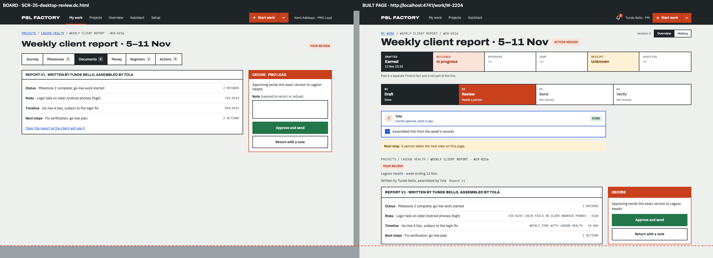
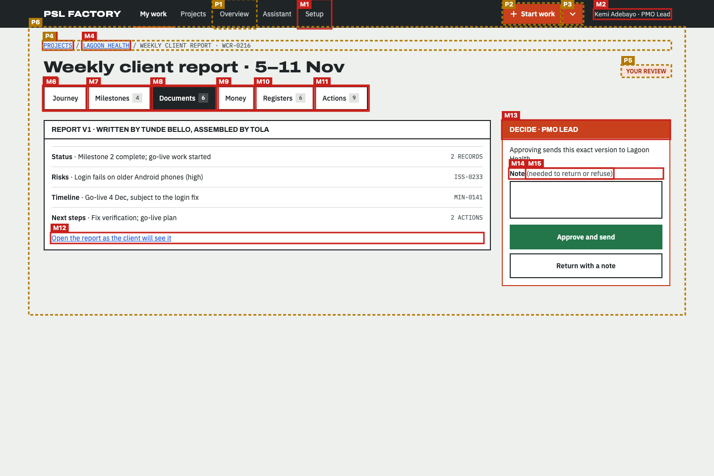
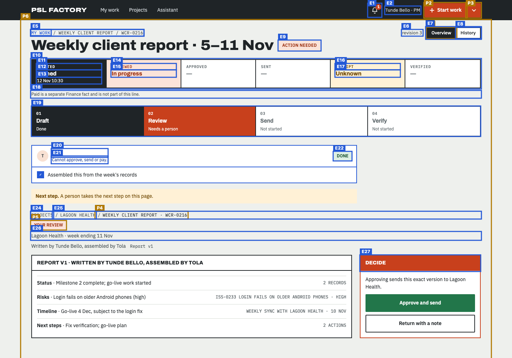
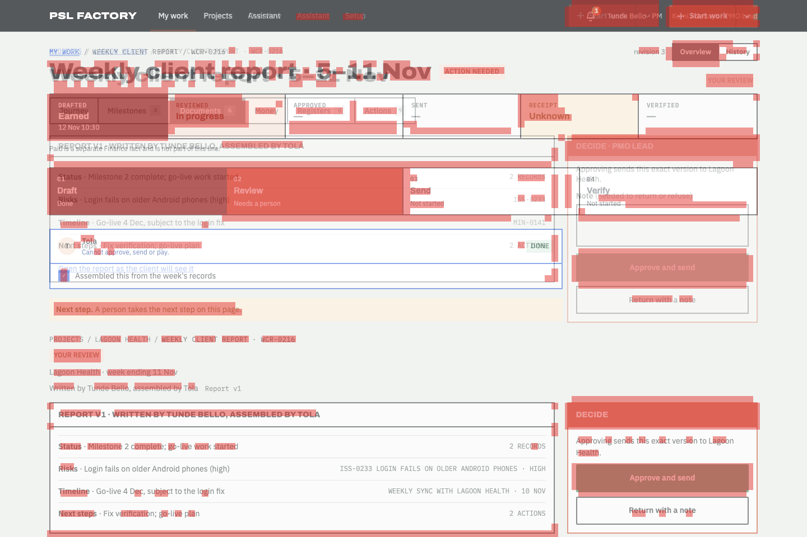

Does the built page follow the design?
Board SCR-25-desktop-review.dc.html compared with http://localhost:4741/work/W-2204 at 1440px wide · 2026-11-15T11:01:44.499Z
- Every board item is on the page or approved as an exception (100%).
- Visual match 68.2 is below 90.
- 6 item(s) are in a different place; review them (not part of the pass rule unless --strict-position).
17 of 32 things drawn on the board were found on the page: headings, buttons, links, search and filter controls, table columns, labels and the repeated rows (counted once, not per row).
How closely the shapes line up: blocks, bars, tables and text areas, compared in 12px squares over the top 960px. Different words in the same place still count as a match, so sample data does not lower the score.
Missing from the built page 15
Drawn on the board but not found on the page. Each one must be built, or approved as an exception.
| # | What | Text on the board | Where on the board | Exception |
|---|---|---|---|---|
| M1 | Link | Setup | middle, 1px down | approved Conflicts 11 (and 5 for the phone back links): top bar, signed-in name and role, Setup nav and the phone back link belong to the frame, not to this feature. · design engineer, 15 Nov (D-71) |
| M2 | Text | Kemi Adebayo · PMO Lead | right, 20px down | approved Conflicts 11 (and 5 for the phone back links): top bar, signed-in name and role, Setup nav and the phone back link belong to the frame, not to this feature. · design engineer, 15 Nov (D-71) |
| M3 | Link | PROJECTS | left, 84px down | approved Conflicts 4: the work item page keeps its own title, tabs, facts strip and station track; the board's project tab bar and its Projects / Lagoon Health crumb links are not drawn. The page's crumb under the header carries the same words as plain text. · design engineer, 15 Nov (D-71) |
| M4 | Link | LAGOON HEALTH | left, 84px down | approved Conflicts 4: the work item page keeps its own title, tabs, facts strip and station track; the board's project tab bar and its Projects / Lagoon Health crumb links are not drawn. The page's crumb under the header carries the same words as plain text. · design engineer, 15 Nov (D-71) |
| M5 | Tabs | Project | left, 174px down | approved Conflicts 4: the work item page keeps its own title, tabs, facts strip and station track; the board's project tab bar and its Projects / Lagoon Health crumb links are not drawn. The page's crumb under the header carries the same words as plain text. · design engineer, 15 Nov (D-71) |
| M6 | Tab | Journey | left, 176px down | approved Conflicts 4: the work item page keeps its own title, tabs, facts strip and station track; the board's project tab bar and its Projects / Lagoon Health crumb links are not drawn. The page's crumb under the header carries the same words as plain text. · design engineer, 15 Nov (D-71) |
| M7 | Tab | Milestones 4 | left, 176px down | approved Conflicts 4: the work item page keeps its own title, tabs, facts strip and station track; the board's project tab bar and its Projects / Lagoon Health crumb links are not drawn. The page's crumb under the header carries the same words as plain text. · design engineer, 15 Nov (D-71) |
| M8 | Tab | Documents 6 | left, 176px down | approved Conflicts 4: the work item page keeps its own title, tabs, facts strip and station track; the board's project tab bar and its Projects / Lagoon Health crumb links are not drawn. The page's crumb under the header carries the same words as plain text. · design engineer, 15 Nov (D-71) |
| M9 | Tab | Money | left, 176px down | approved Conflicts 4: the work item page keeps its own title, tabs, facts strip and station track; the board's project tab bar and its Projects / Lagoon Health crumb links are not drawn. The page's crumb under the header carries the same words as plain text. · design engineer, 15 Nov (D-71) |
| M10 | Tab | Registers 6 | middle, 176px down | approved Conflicts 4: the work item page keeps its own title, tabs, facts strip and station track; the board's project tab bar and its Projects / Lagoon Health crumb links are not drawn. The page's crumb under the header carries the same words as plain text. · design engineer, 15 Nov (D-71) |
| M11 | Tab | Actions 9 | middle, 176px down | approved Conflicts 4: the work item page keeps its own title, tabs, facts strip and station track; the board's project tab bar and its Projects / Lagoon Health crumb links are not drawn. The page's crumb under the header carries the same words as plain text. · design engineer, 15 Nov (D-71) |
| M12 | Link | Open the report as the client will see it | middle, 471px down | approved Conflicts 10: no document route exists and the contract has no link field for the client's view of the report (contract proposal). · design engineer, 15 Nov (D-71) |
| M13 | Text | DECIDE · PMO LEAD | right, 244px down | approved Conflicts 10: the frame's Decide panel is titled "Decide" (no role field exists); the note field and its label are drawn when "Return with a note" is pressed, with the descriptor's label. · design engineer, 15 Nov (D-71) |
| M14 | Text | Note (needed to return or refuse) | right, 341px down | approved Conflicts 10: the frame's Decide panel is titled "Decide" (no role field exists); the note field and its label are drawn when "Return with a note" is pressed, with the descriptor's label. · design engineer, 15 Nov (D-71) |
| M15 | Text | (needed to return or refuse) | right, 341px down | approved Conflicts 10: the frame's Decide panel is titled "Decide" (no role field exists); the note field and its label are drawn when "Return with a note" is pressed, with the descriptor's label. · design engineer, 15 Nov (D-71) |
In a different place 6
Found on both, but in a different order, side of the page, or area (for example inside the table frame instead of above it).
| # | What | How it moved |
|---|---|---|
| P1 | Link Overview |
|
| P2 | Link Start work |
|
| P3 | Link More ways to start |
|
| P4 | Text PROJECTS / LAGOON HEALTH / WEEKLY CLIENT REPORT · WCR-0216 |
|
| P5 | Text YOUR REVIEW |
|
| P6 | Main area |
|
Looks different 9
Found on both, but styled differently: table rows and cells, fonts, colours, underlines, outlines, corners. Not part of the score; check each one against the board.
| What | Difference |
|---|---|
| Link "My work" |
|
| Link "Overview" |
|
| Link "Start work" |
|
| Link "More ways to start" |
|
| Text "PROJECTS / LAGOON HEALTH / WEEKLY CLIENT REPORT · WCR-0216" |
|
| Heading "Weekly client report · 5–11 Nov" |
|
| Text "REPORT V1 · WRITTEN BY TUNDE BELLO, ASSEMBLED BY TOLA" |
|
| Link "Approve and send" |
|
| Link "Return with a note" |
|
On the page but not on the board 27
Built but not drawn. Some are expected (data, status lines); the rest need the design engineer to approve or remove them.
| # | What | Text on the page | Where on the page |
|---|---|---|---|
| E1 | Button | Alerts, 1 unread | right, 11px down |
| E2 | Text | Tunde Bello · PM | right, 19px down |
| E3 | Navigation area | Breadcrumb | left, 85px down |
| E4 | Text | MY WORK / WEEKLY CLIENT REPORT / WCR-0216 | left, 85px down |
| E5 | Link | MY WORK | left, 85px down |
| E6 | Text | revision 3 | right, 85px down |
| E7 | Navigation area | Work item | right, 77px down |
| E8 | Link | History | right, 79px down |
| E9 | Text | ACTION NEEDED | middle, 115px down |
| E10 | list | Facts | middle, 167px down |
| E11 | Text | DRAFTED | left, 181px down |
| E12 | Text | Earned | left, 199px down |
| E13 | Text | 12 Nov 10:30 | left, 220px down |
| E14 | Text | REVIEWED | left, 181px down |
| E15 | Text | In progress | left, 199px down |
| E16 | Text | RECEIPT | right, 181px down |
| E17 | Text | Unknown | right, 199px down |
| E18 | Text | Paid is a separate Finance fact and is not part of this line. | middle, 257px down |
| E19 | list | Stations in order | middle, 301px down |
| E20 | Text | Tola | left, 421px down |
| E21 | Text | Cannot approve, send or pay. | left, 442px down |
| E22 | Text | DONE | right, 429px down |
| E23 | Navigation area | Where this sits | middle, 598px down |
| E24 | Text | PROJECTS | left, 598px down |
| E25 | Text | LAGOON HEALTH | left, 598px down |
| E26 | Text | Lagoon Health · week ending 11 Nov | middle, 655px down |
| E27 | Heading | DECIDE | right, 721px down |
Pictures
The red dashed line on the side-by-side marks how far down the visual score looks. On the marked board, red boxes are missing items (M). On the marked page, amber boxes moved (P) and blue boxes are extra (E). In the difference picture both screens are laid over each other and red squares are where the shapes do not line up.






Notes about this run
- Images: /_blob/ images are served from /Users/Hunchoo/psl-factory/design/mascots/canvas-assets.json (19 mapped).
Found on both (17)
| Navigation area | Main | |
| Text | PSL FACTORY | |
| Link | My work | |
| Link | Projects | |
| Link | Overview | |
| Link | Assistant | |
| Link | Start work | |
| Link | More ways to start | |
| Main area | ||
| Text | PROJECTS / LAGOON HEALTH / WEEKLY CLIENT REPORT · WCR-0216 | page: WEEKLY CLIENT REPORT · WCR-0216 |
| Heading | Weekly client report · 5–11 Nov | |
| Text | YOUR REVIEW | |
| Text | REPORT V1 · WRITTEN BY TUNDE BELLO, ASSEMBLED BY TOLA | |
| Side panel | page: Review and decide | |
| Text | Approving sends this exact version to Lagoon Health. | |
| Link | Approve and send | |
| Link | Return with a note |
How the scores are worked out
Element coverage. The board is drawn locally from its own template and sample data. From the drawn board the check lists everything a person sees or uses: page areas (navigation, main, search), headings, links, buttons, form fields with their labels, table column headers, filter, search and pagination controls and fixed labels. Rows drawn from sample data count once, as a pattern ("table rows with these columns"). Each item is looked for on the page by its kind and its words (ignoring capitals, curly quotes and small wording differences, at least 80% similar). Coverage is found ÷ drawn. Order is compared in reading order (top to bottom, left to right); an item is "moved" when it breaks the order, sits on the other side of the page, or sits inside a different area.
Visual match. Both full-page screenshots are compared in 12px squares after a light blur, over the board's height (960px; the page is 1010px). Only squares with something in them count. A square matches when its colours line up, or when both have text or lines there. Score = matching ÷ counted squares (4509 of 6607). Over every square including empty background it would be 78.1.
Technical details
Board file: /Users/Hunchoo/psl-factory/design/canvas/project/SCR-25-desktop-review.dc.html
Viewport: 1440×960
Report data: report.json
Exceptions file: /Users/Hunchoo/psl-factory/delivery/features/F-21/fidelity-exceptions.json